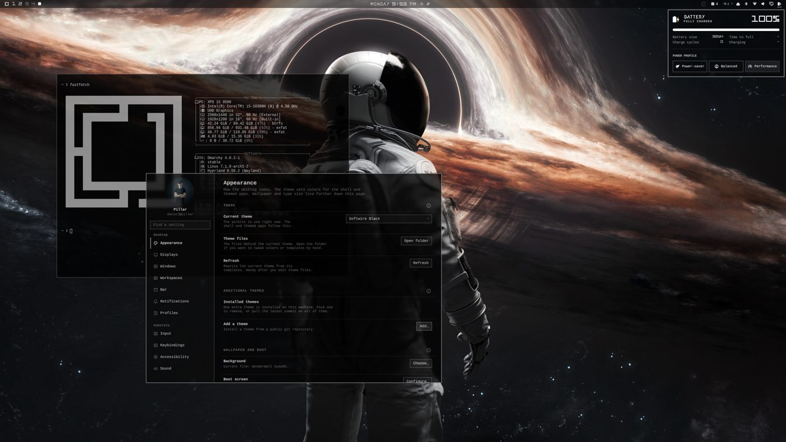
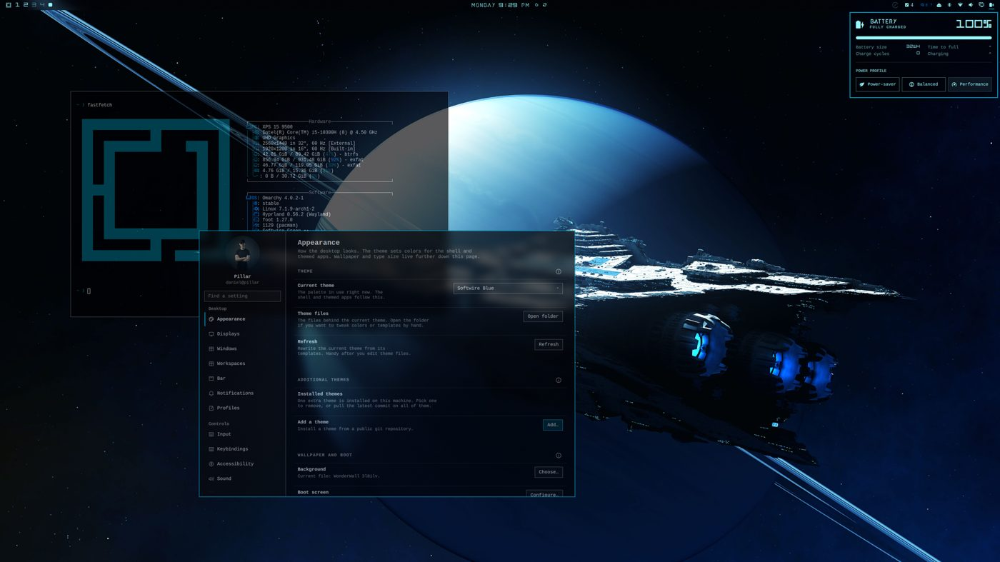
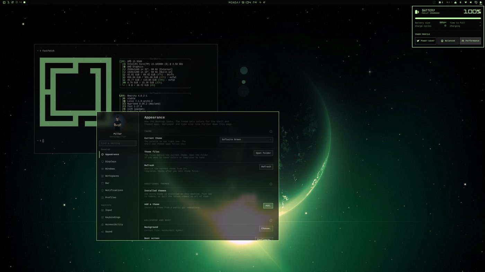
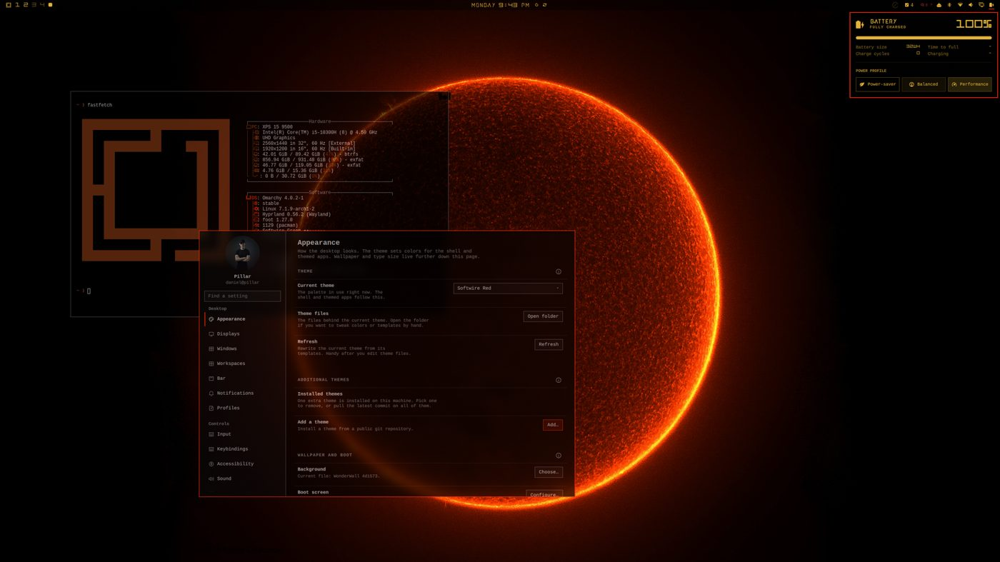
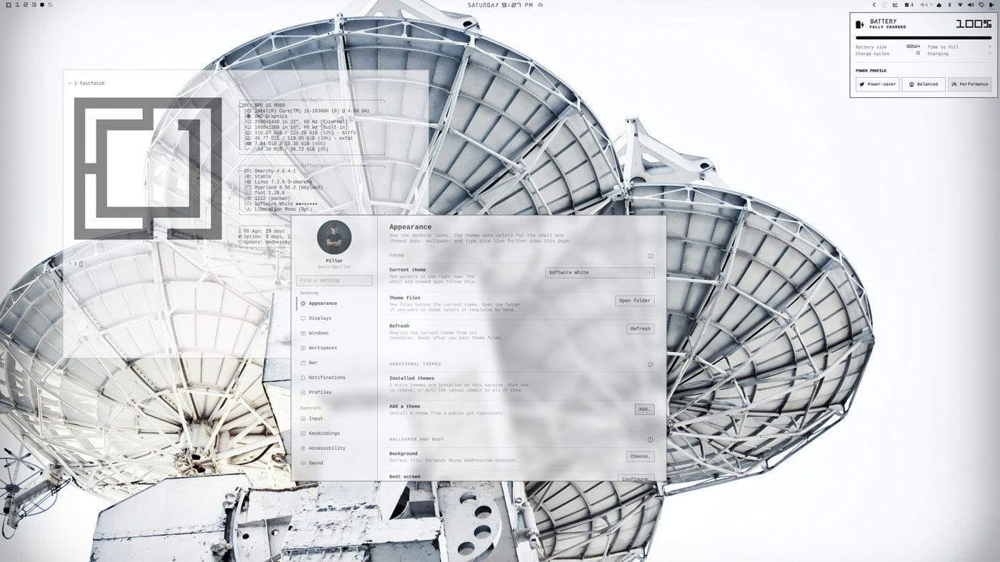

Softwire Themes
An open-source pack of five matching desktop themes for Omarchy Linux, installed with one command.
Designer & developer (solo) · Sep 2026 – present
Problem
Create a cohesive set of desktop themes that share one look but give each a different color identity.
Constraints
- Must follow Omarchy's theme format
- The stock install command only handles one theme, so a pack needs its own installer
- Fonts must be licensed for redistribution
- Uninstalling must not leave the desktop on a deleted theme
Key result
5 themes released (Black, Blue, Green, Red, White) with install and uninstall scripts
STAR
Situation
Omarchy themes are usually shipped one at a time, each with its own look.
Task
Design a consistent five-theme family and package it so all five install at once.
Action
- Shared type, icons and layout; a unique palette, wallpaper and cover image per theme
- Glass effect: 50% shell surfaces plus blurred window opacity (65–80% depending on theme)
- install.sh installs all five; uninstall.sh switches to a stock theme before removing them
- Freeware and CC0 fonts, with their licenses included
Result
Five themes released, including a light-mode variant. No download metrics tracked.
Design decisions
| Decision | Options / choice | Tradeoff |
|---|---|---|
| Custom installer | omarchy theme install vs own install.sh | Supports a multi-theme pack; one more script to maintain |
| Per-theme opacity | One opacity value vs tuned per palette | Better readability per theme, more tuning work |
Testing & iteration
- Installer and uninstaller checked against a live Omarchy desktop
- Iterated on the White theme's wallpaper and default
Visuals





Next steps
- Refine based on user feedback